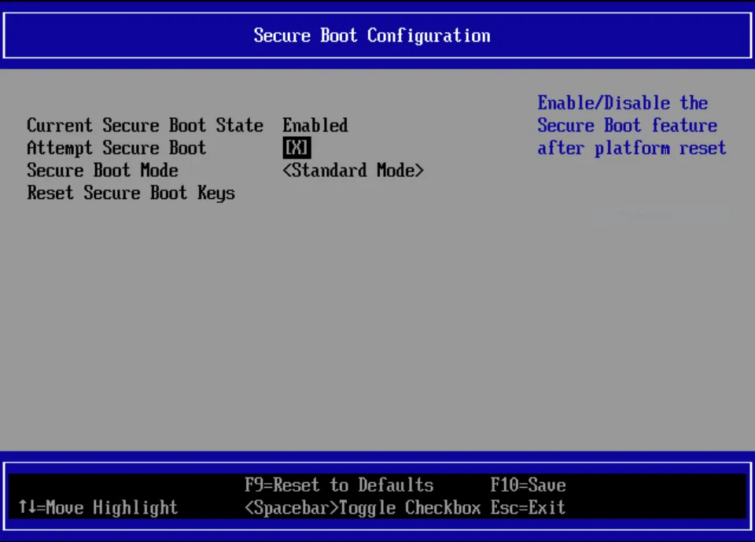
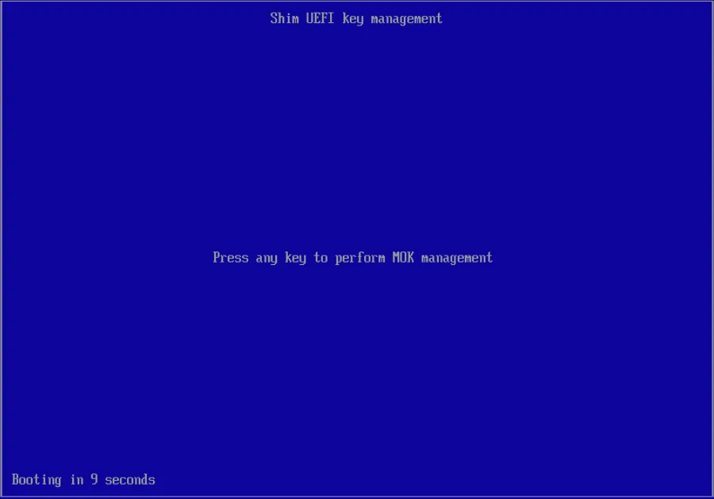
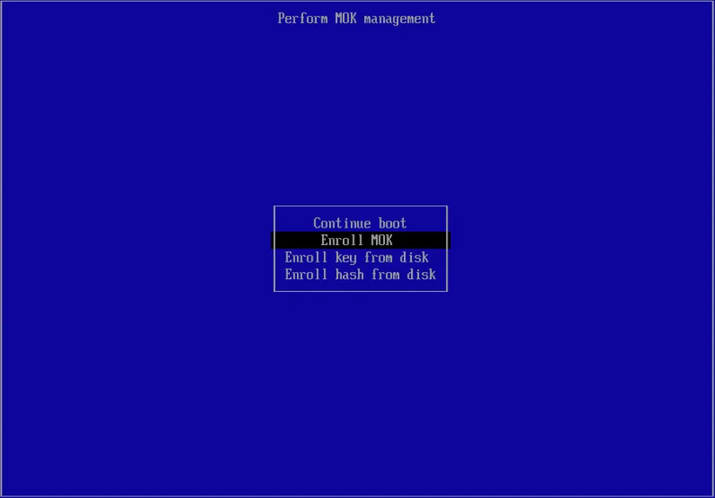
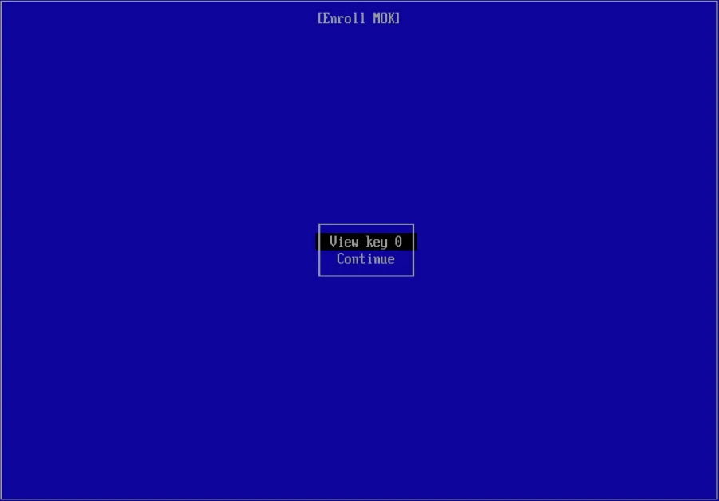
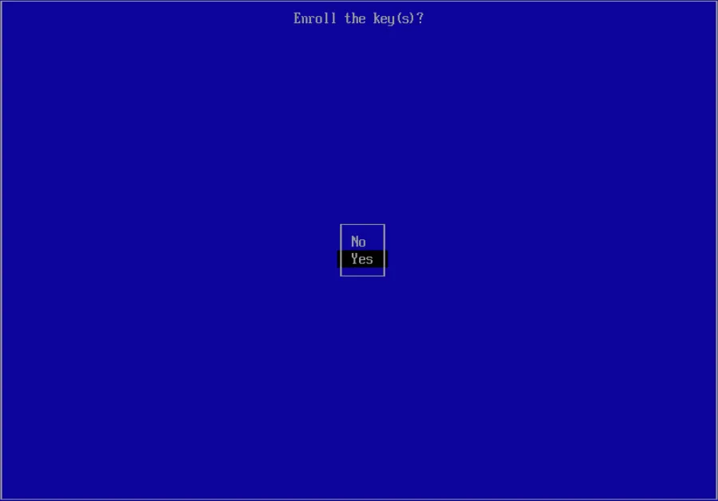
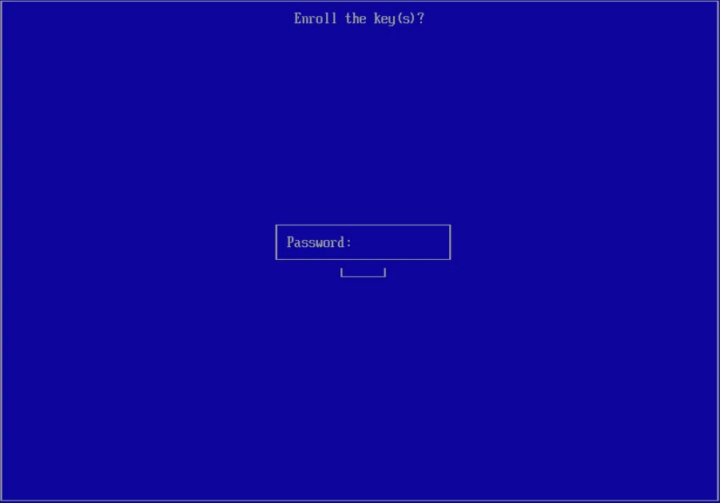
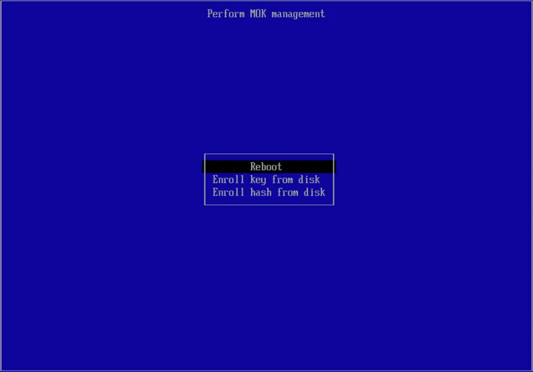

Secure Boot
VyOS uses shim from Debian 13 (trixie), which is properly signed by the
UEFI Secure Boot key from Microsoft.
Important
Enrolling a MOK is only required for development purposes, when testing UEFI Secure Boot with a custom image that is not signed by VyOS Networks. Official LTS images contain officially signed binaries and run out of the box, without any key enrollment.
For more information see Microsoft UEFI Signing Requirements.
To generate a custom ISO with your own secure boot keys, run the following commands prior to your ISO image build:
cd vyos-build
CA_DIR="data/certificates"
CA_YEAR="$(date +%Y)"
SHIM_CERT_NAME="vyos-dev-${CA_YEAR}-shim"
VYOS_KERNEL_CERT_NAME="vyos-dev-${CA_YEAR}-linux"
openssl req -new -x509 -newkey rsa:4096 -keyout ${CA_DIR}/${SHIM_CERT_NAME}.key -out ${CA_DIR}/${SHIM_CERT_NAME}.der \
-outform DER -days 36500 -subj "/CN=VyOS Networks - DEVELOPMENT - Secure Boot CA/" -nodes
openssl x509 -inform der -in ${CA_DIR}/${SHIM_CERT_NAME}.der -out ${CA_DIR}/${SHIM_CERT_NAME}.pem
openssl req -newkey rsa:4096 -sha256 -nodes -keyout ${CA_DIR}/${VYOS_KERNEL_CERT_NAME}.key \
-out ${CA_DIR}/${VYOS_KERNEL_CERT_NAME}.csr -outform PEM -days 3650 \
-subj "/CN=VyOS Networks - DEVELOPMENT - Secure Boot Signer - linux/"
openssl x509 -req -in ${CA_DIR}/${VYOS_KERNEL_CERT_NAME}.csr -CA ${CA_DIR}/${SHIM_CERT_NAME}.pem \
-CAkey ${CA_DIR}/${SHIM_CERT_NAME}.key -CAcreateserial -out ${CA_DIR}/${VYOS_KERNEL_CERT_NAME}.pem -days 3650 -sha256
Installation
As VyOS development builds have no access to the HSM stored signing key, you need to enroll the previously generated MOK to the system.
First, disable UEFI Secure Boot for the installation.

Proceed with the standard VyOS installation on
your system. Instead of the final reboot command, enroll the
MOK using mokutil. The shim certificate generated
above is part of the image and available as
/var/lib/shim-signed/mok/vyos-dev-<year>-shim.der, where <year> is the year
the certificate was generated.
vyos@vyos:~$ sudo mokutil --ignore-keyring --import /var/lib/shim-signed/mok/vyos-dev-2026-shim.der
input password:
input password again:
You can set the input password to any value you choose. You’ll need this
password after reboot when MOK Manager launches to permanently install the keys.
With the next reboot, MOK Manager will automatically launch

Select Enroll MOK

You can now view the key to be installed and continue with key installation.


Now you need to enter the password you defined previously.

Now reboot and re-enable UEFI Secure Boot.

VyOS will now launch in UEFI Secure Boot mode. You can verify this with
show secure-boot (see Operation) or by
running one of the following commands:
vyos@vyos:~$ show log kernel | match Secure
Oct 08 19:15:41 kernel: Secure boot enabled
vyos@vyos:~$ show version
Version: VyOS 1.5-secureboot
Release train: current
Release flavor: generic
Built by: autobuild@vyos.net
Built on: Tue 08 Oct 2024 18:00 UTC
Build UUID: 5702ca38-e6f4-470f-b89e-ffc29baee474
Build commit ID: 9eb61d3b6cf426
Architecture: x86_64
Boot via: installed image
System type: KVM guest
Secure Boot: enabled <-- UEFI secure boot indicator
Hardware vendor: QEMU
Hardware model: Standard PC (i440FX + PIIX, 1996)
Hardware S/N:
Hardware UUID: 1f6e7f5c-fb52-4c33-96c9-782fbea36436
Copyright: VyOS maintainers and contributors
Image Update
Note
Currently, there is no signed version of shim for VyOS. If you
want Secure Boot support, you can build a custom image with your own keys.
During image installation, you install your MOK into the UEFI variables to add trust to this key. After you re-enable Secure Boot in UEFI, you can only boot into your signed image.
You can no longer boot into a CI-generated rolling release because those are not signed by a trusted party (T861 work in progress). This also means you must sign all successor builds with the same key; otherwise, you’ll see this error:
error: bad shim signature
error: you need to load the kernel first
To prevent this, add system image verifies the Linux Kernel of the
new image when the running system has Secure Boot enabled. The Kernel must be
signed by one of the MOK keys enrolled in UEFI.
If it is not, the installation is aborted before any files are copied:
vyos@vyos:~$ add system image /tmp/vyos-unsigned-amd64.iso
Validating image compatibility
Validating image checksums
Validating Secure Boot signature
Secure Boot is enabled, but the Linux Kernel "vmlinuz" of the new image is not signed by an enrolled key. The new image would not boot.
Exiting from VyOS installation
Enroll the key the new image is signed with before you add the image. On systems with Secure Boot disabled, or booted in legacy BIOS mode, the check is skipped.
Linux Kernel
In addition to Secure Boot support, VyOS uses ephemeral key signing of Linux Kernel modules for an extra security layer in both Secure and non-Secure boot images.
When the CI system builds a Kernel package and required third-party modules, it generates a temporary (ephemeral) key pair for signing the modules. The public key is embedded in the Kernel binary to verify loaded modules.
After the Kernel CI build completes, the generated key is discarded, meaning
we can no longer sign additional modules with that key. The Kernel configuration
also includes the option CONFIG_MODULE_SIG_FORCE=y, which enforces signature
verification for all modules. If you try to load an unsigned module, you’ll
get this error:
insmod: ERROR: could not insert module malicious.ko: Key was rejected by service
This prevents loading any malicious code after the image is assembled into the Kernel as a module. You can disable this behavior on custom builds if needed.
Operation
Show whether the system was booted with UEFI Secure Boot enabled.
vyos@vyos:~$ show secure-boot
SecureBoot enabled
Show the issuer and subject of the certificate used to sign the running Linux Kernel.
vyos@vyos:~$ show secure-boot detail
Issuer: /CN=VyOS Networks Secure Boot CA
Subject: /CN=VyOS Networks Secure Boot Signer 2025 - linux
Troubleshoot
In most cases, if something goes wrong during system boot, you’ll see this error message:
error: bad shim signature
error: you need to load the kernel first
This error means the Machine Owner Key used to sign the Kernel is not trusted
by your UEFI. Enroll the MOK using the mokutil command as described
above.